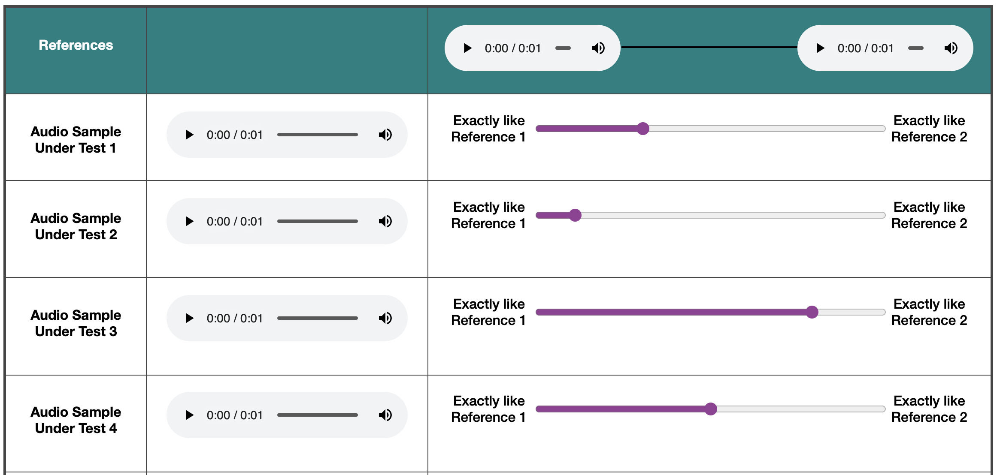

Note: Please ‘accept’ this HIT only if you have access to a laptop or desktop with internal or external
speakers or headphones and if you are using Chrome or Firefox browser. This HIT involves listening and
evaluating audio clips.
Project Details:
The purpose of this research is to evaluate the quality of synthetic audio clips generated using an
artificial neural network. The audio clips under test belong to the domain of audio textures (for e.g. a
series of popping sounds, the ticking sound made by a Geiger counter or the sound made by water filling
a container) or pitches made by musical instruments. The specific goal of this project is to ensure that
the synthetic outputs generated by these deep learning models are validated by human beings to test for
certain timbral qualities.
Consent:
Before working on this HIT, please read the consent details on the 'View Consent Details' section of the
HIT page.
By accepting this HIT on Mechanical Turk, you will be indicating your consent to
participating in our study
as per the details outlined the consent details section.
Task Instructions:
Audio Timbre Similarity Test
In this task you will be presented with two audio clips called 'References' (displayed on the green bar).
Both clips belong to two different instruments (e.g. one might sound like a Clarinet, the other might
sound like a Trumpet).
- Listen to both the 'Reference' audio clips (in the green row) fully.
- Next, listen to each of the 'Audio Sample Under Test 1/2/3/4/5/6/7' and and use the slider to indicate which Reference audio the
test audio is more similar or closer to in timbre (e.g., instrument used to play the note).
Please ensure you have fully listened to all audio samples on the page and change the slider accordingly before submitting the task.
For e.g., if the 'Audio Sample Under Test 1' sounds similar or more closer in Timbre to the first Reference, then move the slider towards the first Reference.
Subsequently, if 'Audio Sample Under Test 2' sounds closer in Timbre to the first Reference than the first test sample, move the slider accordingly as shown in the
image below -

For any questions:
Please use the ‘Contact this requester’ link on the HIT details if you need further details or
clarifications on the task. The Principal Investigator (the person in charge of this research) or
his/her
representative will describe this research to you and answer all of your questions.
Note: On using this
feature, your e-mail address and your name will automatically be visible to our research team so that we
can reply to you.